BOOK OF THE LEDGER · VOL.0 — WORLD & CHARACTER GUIDE
Red Ledger · Book of the LedgerVol.0
Before you open the books
About This Book
This is the first ledger. Book of the Ledger Vol.0 is the official setting guide to RED LEDGER, an original TV anime in development at P7 Anime: twelve episodes, about 22 minutes each, made with an English dub in mind from day one.
What's inside
Ch.1 — The City of Kanegura. The vertical city built on a dead god's ribs, the seven Lenders, and the rules every citizen lives and dies by.
Ch.2 — Default. How Jin's power actually works, what it costs, and where it's headed.
Ch.3 — The Cast. Eight key players, one page each.
Ch.4 — Episode 1. A guide to the pilot, plus the first three minutes in screenplay form.
Scattered through the chapters you'll find documents from inside Kanegura: a Bourse notice, a Collection Day poster, a Settlement contract. Read them the way a citizen would — closely, and a little nervously.
Spoiler line
Everything here goes up to the end of Episode 1 and no further. Where characters have secrets, we tell you there's something in the ledger — not what it says.
Notes for readers
• Names appear in Western order (Jin Akaba, Mio Kuzuha). In-world registries print them SURNAME, GIVEN — just like the Bourse does.
• Key terms are kept in English across all official material: Credit, Rating, Settlement, Collection Day, Default.
• This is a pre-production guide. Designs and details may change before broadcast.
• The story involves debt, violence and memory loss.
RED LEDGER — VOL.002
Red Ledger · Book of the LedgerContents
Index of accounts
Contents
Prologue — I'm Not Paying04
Ch.1 · The City of Kanegura — cross-section05
The Three Tiers: Peak, Middle Tier, Underledger06
The Seven Lenders07
Credit & Collateral08
Rating: ZERO to AAA09
Settlement — the sanctioned duel10
Collection Day11
The Grand Settlement12
Ch.2 · Default — how it works13
The Price, and Three Stages14
Ch.3 · The Cast — relationship chart15
Jin · Mio · Dōgen · Kei16–19
Nil · Tsubame · Kujō · Hazama20–23
Ch.4 · Episode 1 — "I'm Not Paying"24
Screenplay excerpt: Cold Open, 00:00–03:0025–27
Glossary28
Afterword & Coming in Vol.129
Colophon30
In-world documents: Bourse Notice No. 412 (p.08) · Settlement Contract, specimen (p.10) · Collection Day poster (p.11) · Grand Settlement call for entries (p.12)
RED LEDGER — VOL.003
PrologueI'm Not Paying
Prologue
Everyone here owes a god.
In a city where all power is borrowed from gods, a boy who inherited an infinite debt discovers he can refuse to pay — and starts collecting from the gods themselves.
Kanegura is a city stacked on the ribs of a dead god. Every citizen gets a ledger mark burned into their left wrist at age ten, and every power in town — iron skin, fire, speed, a voice that makes people obey — is a loan from one of the seven Lenders. The mark glows in your Lender's color and shows your balance in numbers anyone can read. Miss a payment, and on Collection Day the Collectors come for your collateral: your voice, your eyesight, your memories.
Jin Akaba is sixteen, runs noodles for a street stall in the slums, and is rated ZERO — the only person in the city no Lender will touch. His father vanished when he was four and left him a debt with no bottom: −∞. Then, on the worst night of his life, Jin learns that his red arm can do one thing nobody else can. It can make a contract default.
Why it hits
Debt is universal. Student loans, rent, subscriptions. A hero who says "no" to the bill needs no translation.
Power you can read. Balances glow on wrists; Ratings rise on public boards. You can watch him climb.
One line, one mark. A catchphrase and a red wrist — built for clips, memes and merch.
The line
"I'm not paying."
「払わねえよ。」 — Jin Akaba
DEFAULTCONTRACT SUSPENDED
Format TV anime · 1 cour · 12 × ~22 min · English dub planned | Tone hot-blooded battle 60 · urban noir 20 · family drama 20. It's dark — but the hero laughs.
RED LEDGER — VOL.004
Ch.1 · The City of KaneguraCross-section
Chapter 1
The City of Kanegura
A god died here, and the city grew on the body. Kanegura climbs the giant ribs of that corpse — white fossil pillars visible from every street — with buildings clinging between the bones like birds' nests. At the top, the Bourse sits above the clouds. At the bottom, in the belly, is the Underledger. Deeper still, sealed in the Deep Vault, the seven Lenders wait.
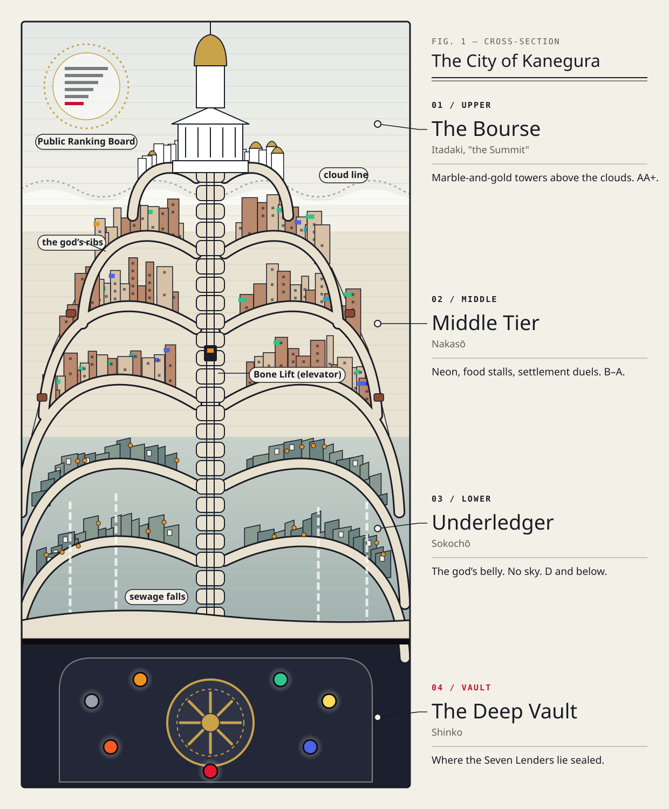
Cross-section of Kanegura. Moving between tiers means riding the Bone Lifts — elevators inside the ribs that scan your Rating at the door.
RED LEDGER — VOL.005
Ch.1 · The City of KaneguraThe Three Tiers
Three tiers. Your Rating picks one.
Top · AA and above
The Peak — the Bourse
White marble and gold towers on the tips of the ribs, always above the clouds, always sunny. The only sounds are bells and turning pages; the air is cold and smells of ink and perfume. A vast circular Public Ratings Board is projected across the sky. Home to the top-rated, the brokers and the Auditors.
Middle · B to A
The Middle Tier
The commercial belt halfway up the bones. Neon signs, sky gondolas, and street monitors streaming live Settlements. It smells of fryer oil and exhaust. Everyone walks with one eye on their wrist. Home to ordinary citizens, licensed fighters, and bookies.
Bottom · D and below
The Underledger
The god's belly. Runoff from above falls in thin waterfalls; there's no sky. The only light is the glow of the Ratings Board bouncing down from the Peak, and the lanterns of the night stalls. Damp, rust, and the smell of fish-stock broth. Wanted posters for overdue debtors are pasted on the walls, layer over layer. Home to the D-rated, the overdue, and people with no papers at all.
The Bone Lifts
The lifts that run inside the ribs demand your Rating before the doors open. Underledger residents can't ride above the Middle Tier. The city keeps its people in their place with a scanner and a beep — and for a ZERO, the scanner just says ERROR.
RED LEDGER — VOL.006
Ch.1 · The City of KaneguraThe Seven Lenders
The Seven Lenders
Ancient gods sealed in the Deep Vault. No one has ever seen one. Contracts are made only through the ledger mark — and every loan comes with collateral.
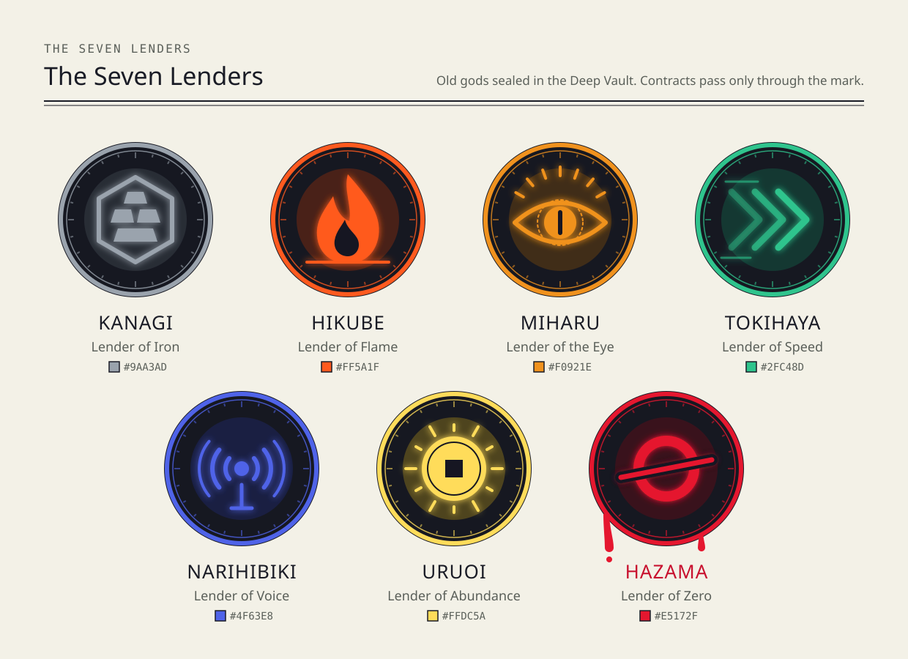
Lender
Lends
Typical collateral
Kanagi, the Iron Lender
Hardened skin and bone; forging iron
Body heat, sense of pain
Hikube, the Flame Lender
Ignition, radiant heat
Lifespan, by the month
Miharu, the Eye Lender
Reading balances, odds, lies, trajectories
Eyesight itself
Tokihaya, the Speed Lender
Acceleration, reflexes
Memories of walking; feeling in the legs
Narihibiki, the Voice Lender
Commanding voice, shockwaves
Your own true voice, your songs
Uruoi, the Abundance Lender
Wealth, luck, raising or cutting others' credit
Taste, the feeling of joy
Hazama, the Zero Lender
Nothing. Ever. With one known exception.
Unknown
RED LEDGER — VOL.007
Ch.1 · The City of KaneguraCredit & Collateral
Credit: the rules of borrowed power
The mark. At ten, every citizen goes through the Opening and gets a ledger mark on the left wrist. It glows in the color of your Lender and shows your balance — how much you owe — as a number.
One Lender each. As a rule you may contract with only one Lender. Holding several at once is multiple indebtedness, a serious crime.
Every use costs. Each time you draw Credit, your balance climbs — with a cash-register ching. Go over your credit limit and the mark flashes and your power cuts out. That's being maxed out.
Pay monthly. Interest is due every month, in money, labor, or Settlement winnings.
Or lose collateral. Can't pay, and on Collection Day the collateral you pledged — a body part, a sense, a memory — is taken.
Strong borrowers grow lines in their Lender's color, running up from the wrist; at AA they reach the collarbone. When a fighter's mark starts flickering and their color goes muddy, the whole crowd knows they're close to the limit.
What collateral looks like
Contracts name the collateral up front, and it's always something you can't buy back: a sense (taste, pain, sight), a part of you (a voice, an arm, your legs), time (months off your life), or memories. When it's taken, it doesn't hurt. It just goes gray — then it's gone.
THE BOURSE · OFFICE OF ACCOUNTSNOTICE No. 412
Reminder to All Account Holders
Your mark is your account. Covering, bandaging or tattooing over a ledger mark is prohibited.
One holder, one Lender. Reports of multiple indebtedness are rewarded with a credit-limit bonus.
Interest is due by the last day of each month. The Bourse accepts coin, labor and Settlement winnings.
Collateral is binding. Pleading, bargaining and hiding do not reduce it.
— The Bourse thanks you for your continued borrowing.
ISSUEDPEAK OFFICE
RED LEDGER — VOL.008
Ch.1 · The City of KaneguraRating
Rating: ZERO to AAA
The Bourse recalculates every citizen's Rating daily, from credit limit, payment history and Settlement record. Everyone's Rating is public — on street boards and on the great board over the Peak, each name lit in its Lender's color. Your Rating decides where you may live and which Bone Lift doors will open.
Rating
What it means
Tier
ZERO
Mark broken, unratable. Not treated as a citizen. (Only one person holds it.)
Underledger
D
Overdue history, a sliver of credit
Underledger
C
Ordinary citizen
Lower Middle Tier
B
Skilled borrower, licensed fighter
Middle Tier
A
First-rate; eligible for the Grand Settlement
Upper Middle Tier, Peak pass
AA
A few dozen in the whole city
Peak
AAA
A handful. Bourse board level
Peak
Live from the Public Ratings Board · Collection Day
AASAKAKI, DŌGEN · 18 · ■ IRONNO-DEFAULT STREAK ▲
A· · · · · · · · · · · · · ·
B· · · · · · · · · · · · · ·
DTSUBAME · 12 · ■ SPEED▼
ZERO— NAME NOT DISPLAYED —−∞
How to read a mark
Every mark is a double ledger rule ringing the wrist, with the balance on the inside. Count the rules to read the Rating: one for D, up to six for AAA. Jin's has no rules at all — just red, wrist to elbow, and −∞.
Board rule: when a Rating goes up, the old number is struck through and rewritten in red ink. Watch for it — in this show, it's the sound of winning.
RED LEDGER — VOL.009
Ch.1 · The City of KaneguraSettlement
Settlement: the sanctioned duel
A Settlement is a Bourse-licensed duel, fought in a 20-meter Settlement Circle, refereed by a Bourse Auditor and streamed live on every street monitor. Both fighters stake part of their credit limit; the winner adds the loser's stake to their own. It's the fastest way up — and the only legal way to take power from someone else. Every bout starts with paperwork:
THE BOURSE · SETTLEMENT REGISTRYFORM S-1 · SPECIMEN
Settlement Contract & Collateral Declaration
The undersigned agree to settle accounts in a licensed Circle under the eye of a Bourse Auditor, on the following terms:
Stake. Each party declares the share of credit limit at risk — max. 30%, equal on both sides. Winner takes the loser's stake.
Challenge. A party may challenge up to two Ratings above their own.
Victory on any one of: (a) opponent leaves the Circle, both feet landing outside; (b) opponent down and not up by the Auditor's count of ten; (c) opponent maxed out and not recovered within 30 sec.; (d) opponent declares "I'm settling."
Time limit 10 min. Undecided bouts go to the party with the lower balance. Prudence pays.
Forbidden: killing; striking spectators; contracting a new Lender mid-bout. Penalty: Rating struck from the books on the spot.
PARTY A · MARK SCAN
PARTY B · MARK SCAN
GUARANTOR (IF ANY)
AUDITOR
VOIDSPECIMEN
Can a ZERO fight?
Entry needs a Rating of D or better. A ZERO has no credit to stake — so he can't challenge anyone. The only way in: a registered broker signs as guarantor and puts up the collateral for him.
RED LEDGER — VOL.010
Ch.1 · The City of KaneguraCollection Day
Collection Day
The last night of every month. At midnight the bell at the Peak strikes thirteen times, and the mark of everyone who didn't pay starts to pulse a dark, bloody red.
From the bell until dawn, Collectors have the right to take collateral. They may chase anyone who runs and use their powers on anyone who resists.
Collateral doesn't get "repossessed." It disappears. Eyes drain of color. A voice stops mid-scream. A mother's face is suddenly gone from memory.
Outrun the Collectors till sunrise and your debt rolls to next month — at double interest. Down in the Underledger, they call this night tag.
BY ORDER OF THE BOURSE
TONIGHT IS COLLECTION DAY
At the 13th bell, all accounts close.
DEFAULTERS WILL SURRENDER COLLATERAL. CHECK YOUR WRIST. COOPERATE WITH YOUR COLLECTOR.
RUNNING ONLY DOUBLES IT.
— Kanegura Collection Bureau —
Exception: the Special Collection Writ
If you're more than three months overdue, the Collection Bureau can issue a Special Collection Writ — and then a Collector can come for you on any night, not just Collection Day. In Episode 1, this is how Nil walks into a noodle stall the night after the bell.
What you'll see on screen
After the bell, unpaid marks flash between ledger red and dried-ink black. Whatever a Collector takes drains to ash gray first — an eye, a voice, a page of memory — then folds into the Collector's little ledger with a soft pap.
Collectors
Collectors work for the Bourse and wear its employment mark: black, a mark that doesn't glow so much as swallow light. Their power is borrowed from a Lender through that contract. Most wear masks. Nobody in the Underledger looks them in the eye.
RED LEDGER — VOL.011
Ch.1 · The City of KaneguraGrand Settlement
The Grand Settlement
Once a year, the best borrowers in the city fight in the Grand Circle at the top of the Bourse. The prize is the only thing in Kanegura bigger than a debt.
32 fighters, single elimination, held at the Bourse's Grand Circle on the Peak.
Eligibility: Rating A or above — or one nomination slot per registered broker house.
The prize: the champion stands before the doors of the Deep Vault and may petition the Lenders for one wish. Including having a debt wiped clean.
Tradition: the champion also earns the right to a "Final Audit" bout against the Governor of the Bourse.
Every kid in the Underledger knows these rules by heart. Most of them will never see the Peak. That's what makes it a dream.
THE BOURSE · OFFICE OF THE GOVERNORANNUAL NOTICE
THE GRAND SETTLEMENT Call for Entries
The Bourse is pleased to announce that entries are now open for this year's Grand Settlement.
• Rated A and above: register at any Bone Lift terminal by presenting your mark.
• Broker houses: submit one nominee, with guarantee of collateral, to the Settlement Registry.
• Unrated, overdue or struck-off accounts: entries will not be read.
The Lenders listen once a year. Make it count.
— R. Kujō, Governor of the Bourse
OPENENTRIES
RED LEDGER — VOL.012
Ch.2 · DefaultHow it works
Chapter 2
Default
No Lender lends to Jin. His mark is solid red from wrist to elbow, and where a balance should be it shows −∞. On paper he's powerless. In practice, he can do this:
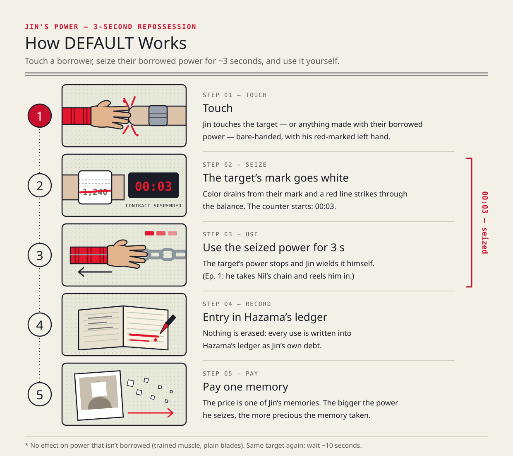
Trigger. Bare-handed touch with the red left hand — on the target's body, or on something made with their Credit.
Effect. The target's contract is seized for about 3 seconds. Their power stops dead — and for those 3 seconds, Jin can use it. In Episode 1, he takes Nil's chains and reels Nil in.
Doesn't work on anything that isn't borrowed: trained muscle, an ordinary blade or gun, the Lenders themselves.
Cooldown. About 10 sec. before it works on the same target again. Tell: red ink spatters from his mark, and a red strike-through cuts the target's number. Screen reads CONTRACT SUSPENDED 00:03.
RED LEDGER — VOL.013
Ch.2 · DefaultThe Price & Three Stages
Nothing is free. Not even refusing.
Default isn't a cancel button. It's debt collection run backwards: Jin seizes your credit as if it were his own collateral. And everything he seizes is written in Hazama's ledger as Jin's debt.
The price: one memory per use
Every time Jin defaults a contract, he pays Hazama one of his memories. Hazama chooses which. The bigger the power he seizes, the more precious the memory. The first thing he loses is his father's face. The debt itself never disappears — it just keeps piling up in Hazama's books. The stronger Jin gets, the more he owes.
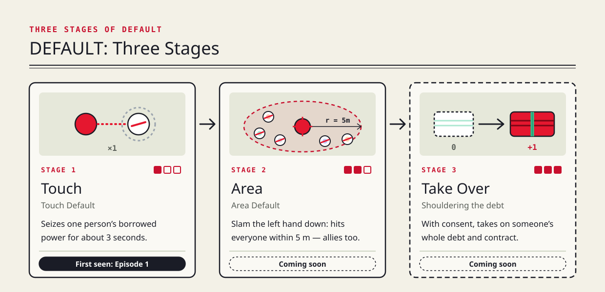
Stage
What it does
1 · Touch Default
Seize one person's contract for ~3 sec. (Episode 1)
2 · Area Default
Slam the left hand into the ground: every contract within 5 m, allies included. A bigger memory.
3 · Takeover
With consent, take on someone's whole debt and contract. They go free (and powerless); Jin keeps their power as a new colored line in his red mark.
In every Settlement, Jin has to count his touches. More touches, more wins. More touches, less Jin.
RED LEDGER — VOL.014
Ch.3 · The CastRelationship chart
Chapter 3
The Cast
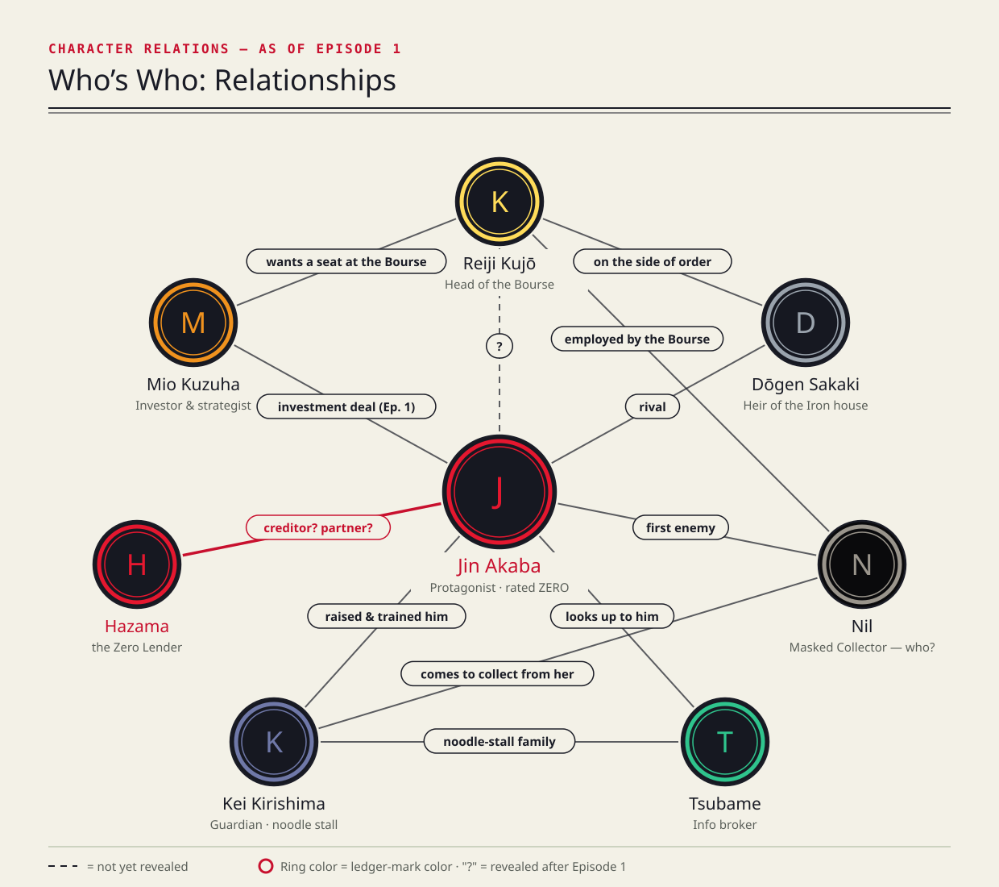
The stall family. Kei raised Jin; Tsubame tags along as his self-appointed little sister and info broker. The deal. Mio, a broker's daughter, bets everything on Jin.
Across the line. Dōgen, the man who's never missed a payment. Nil, the Collector. Kujō, who runs the Bourse. And Hazama — Jin's Lender, living in his wrist.
RED LEDGER — VOL.015
Ch.3 · The Cast01 / Protagonist
Jin Akaba
赤羽 ジン · AKABA, JIN
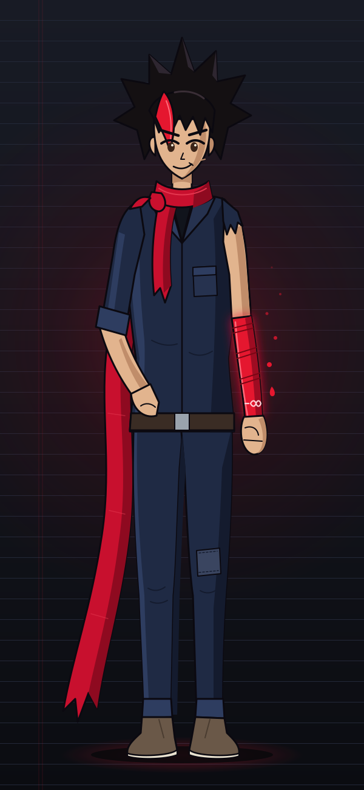
Age
16
Rating
ZERO · balance −∞
Mark
Red, wrist to elbow
Lender
Hazama, the Zero Lender
Power
Default
Delivery boy for Kei's noodle stall, fastest feet in the Underledger, and officially the least valuable person in Kanegura. Black hair with a single red lock, a work jacket with one sleeve cut off, a stall towel round his neck.
His father vanished when Jin was four, leaving no photos — just a debt with no bottom and one memory: a scar through the left eyebrow, and a smile that narrowed one eye.
The dream: "Zero out my old man's debt — then burn this city's ledger to the ground."
The flaw: hands move before his head does. When something hurts, he cracks a joke.
"I'm not paying."「払わねえよ。」
Default runs on memories. Jin's already short one. He's laughing about it. Mostly.
RED LEDGER — VOL.016
Ch.3 · The Cast02 / Investor & Strategist
Mio Kuzuha
葛葉 ミオ · KUZUHA, MIO
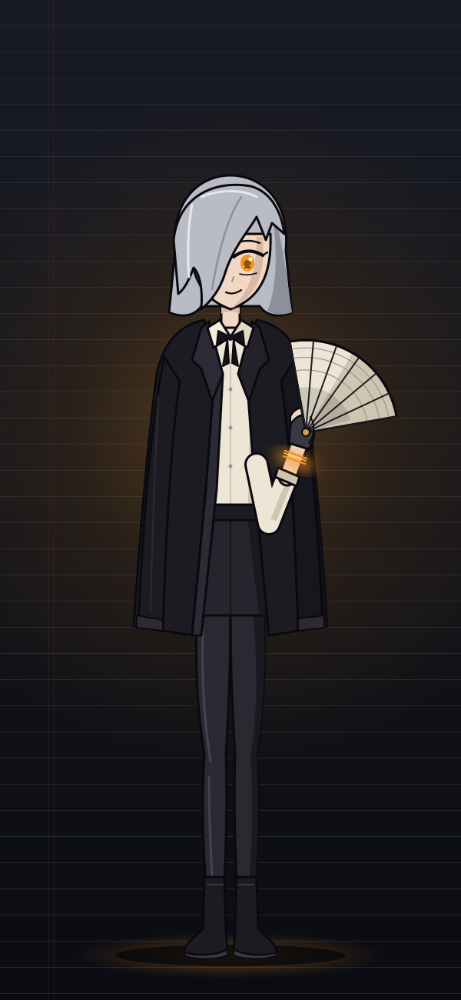
Age
17
Rating
A
Mark
Amber
Lender
Miharu, the Eye Lender
Power
The Eye — balances, odds and lies scroll through her iris
Silver-gray bob, long fringe over one eye, a black suit jacket worn over the shoulders and fingerless gloves. Daughter of a loan-shark house, and she'd like you to stop bringing that up.
The goal: break from her father's business and get the Kuzuha name listed on the Bourse. For that she needs one huge, impossible win.
Her Eye puts a number on everyone in the city — 0.3%, 99.8%. Everyone except one boy, whose odds come back undefined. To an investor, that means junk or jackpot.
"Your odds are 0.3 percent. That's why I'm buying."
She trusts numbers more than people. And she goes through a lot of eye drops.
RED LEDGER — VOL.017
Ch.3 · The Cast03 / Rival
Dōgen Sakaki
榊 ドウゲン · SAKAKI, DŌGEN
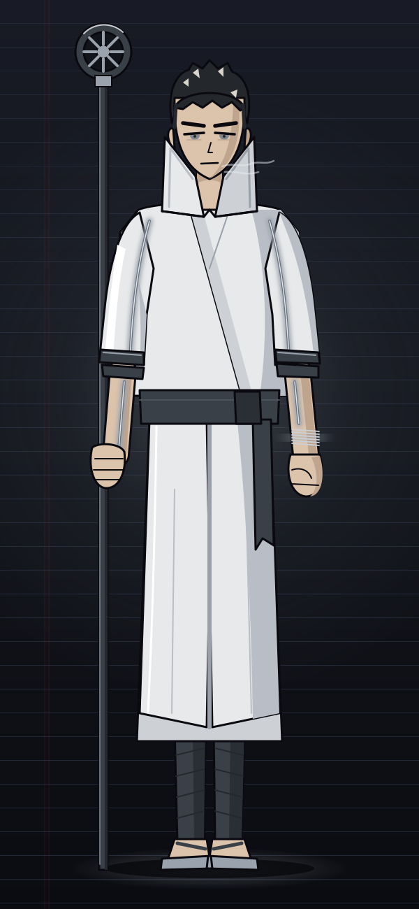
Age
18
Rating
AA
Mark
Gunmetal, lines to both shoulders
Lender
Kanagi, the Iron Lender
Power
Iron skin, iron spear
Heir to the Sakaki house, hereditary priests of the Iron Lender. Tall and broad, close-cropped black hair already shot with white, sharp gray eyes, and battle gear cut from white priest's robes.
He has never once missed a payment — his name sits at the top of the street boards with a no-default streak still running. He keeps the city's order, and he has no patience for people who don't pay back what they borrow.
In Episode 1 he's only a name on the board, shining over Jin's head. He arrives in person in Episode 3.
"Power you can't repay isn't power."
Iron's usual collateral is body heat. Nobody has ever seen Dōgen sweat.
RED LEDGER — VOL.018
Ch.3 · The Cast04 / Guardian & Mentor
Kei Kirishima
霧島 ケイ · KIRISHIMA, KEI
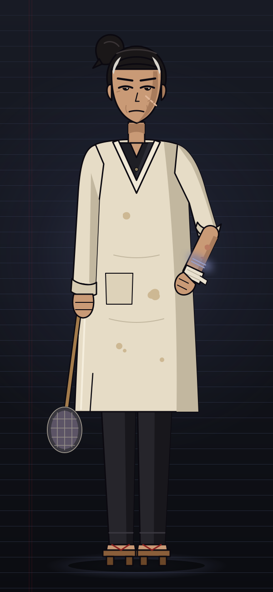
Age
40s
Status
Overdue · 3 months
Mark
Indigo, faded
Lender
Narihibiki, the Voice Lender
Work
Noodle stall "Kirishima," Underledger
Hair pulled back hard, white at the temples, an old scar on her left cheek, solidly built. She runs a tiny noodle stall in the Underledger and raised Jin from the age of four. She also taught him how to fight — which mostly means how to run.
She never raises her voice. Under the cook's smock she still wears a black Collector's vest, and on her left forearm is a brand she calls "an old burn." In Episode 1, Nil has another name for her: formerly of the Fourth Collection Bureau.
All she wants is to keep the stall open and keep Jin alive. In that order? Don't ask.
"Eat. Then we talk."
She remembers a face Jin no longer can.
RED LEDGER — VOL.019
Ch.3 · The Cast05 / Collector
Nil
ニル · NIL
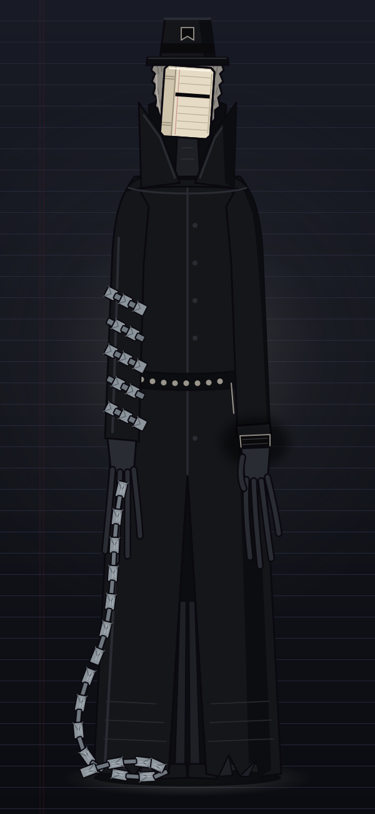
Age
Unknown
Rating
Collector (Bourse staff)
Mark
Black — the Collector's mark
Lender
Kanagi, the Iron Lender — via the Bourse
Power
Seizure Chains
Tall, thin, in a long black coat, with gloves whose fingers are just a little too long. His face is a white porcelain mask: one line across each eyehole, ruled like a ledger page.
His Seizure Chains look like ledger pages strung into links — gray, iron-borrowed, and able to bind a debtor and drag their collateral right out of them. Even other Collectors step back when he arrives.
He does the job because it's the job. He's the first enemy Jin faces, and the first person to call Jin's power by its name — and to say he's seen it before.
"Payment is due."
There's a reason he hides his face. It isn't modesty.
RED LEDGER — VOL.020
Ch.3 · The Cast06 / Info Broker
Tsubame
ツバメ · TSUBAME
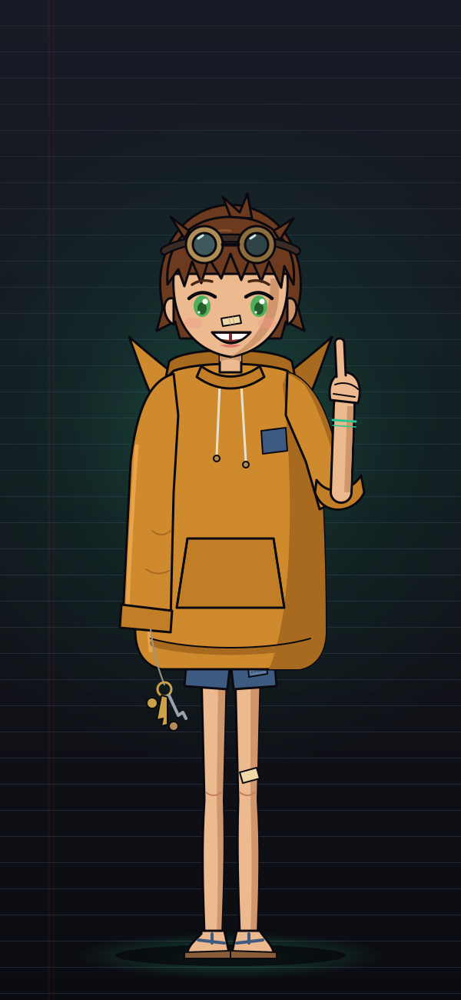
Age
12
Rating
D
Mark
Jade
Lender
Tokihaya, the Speed Lender
Work
Pickpocket, information broker
Messy brown hair held down by goggles, huge green eyes, a gap-toothed grin, a hoodie three sizes too big and sandals that barely count. She calls Jin "big bro," eats at Kei's stall for free, and has a source for everything.
Need to know a rival's record, a back way through the bones, or which Collector works which street? Tsubame knows. Need her to keep a secret? That's harder — she gets excited and it slips out.
The dream: to get out of the Underledger and see the sky, just once.
"Info costs one bowl of noodles!"
Lately she's been fast. Faster than a D-rating should allow.
RED LEDGER — VOL.021
Ch.3 · The Cast07 / Governor of the Bourse
Reiji Kujō
九条 レイジ · KUJŌ, REIJI
Age
30s
Title
Governor of the Bourse
Mark
Gold
Lender
Uruoi, the Abundance Lender
Office
The Governor's suite, the Peak
The man at the very top of the city's books. Gold-brown hair combed neatly back, thin gold-rimmed glasses, pale blue-gray eyes, perfect posture. White three-piece suit. White gloves.
From his marble office, a wall-sized screen shows the Rating of every citizen in Kanegura — millions of names, scrolling. He pours his own tea. He smiles a great deal.
At the end of Episode 1, one red line flickers at the very bottom of his board: ZERO. He seems to have been waiting for it.
"Rest assured. The books always balance."
"Welcome back, Akaba." — Back from where?
RED LEDGER — VOL.022
Ch.3 · The Cast08 / The Zero Lender
Hazama
ハザマ · HAZAMA, THE ZERO LENDER
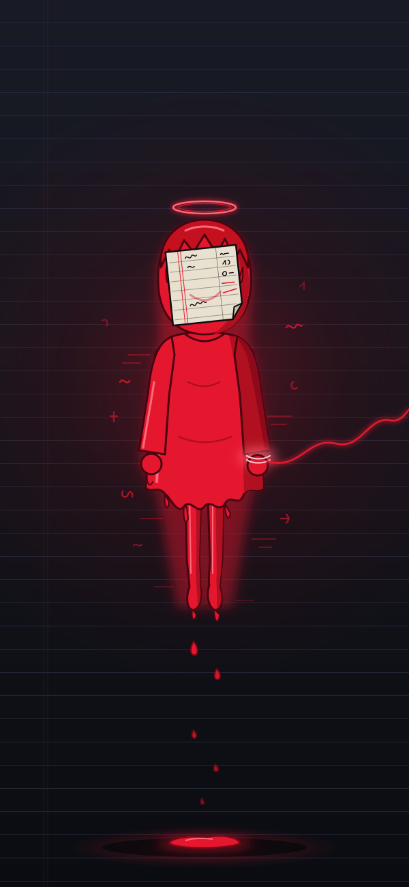
Age
As old as the Lenders
Rank
One of the seven Lenders
Color
Ledger red
Debtor
Jin Akaba (inherited)
Likes
Keeping the books
The Lender who, by nature, lends nothing. Hazama has no body. It exists as red ink that rises off Jin's mark and writes itself into words, and as a child's voice only Jin can hear. When it does take a shape, it's a small barefoot child whose face is hidden behind a ledger page.
Hazama made an exception once: it lent to Jin's father. His father never paid. Now Jin "holds the rest," and every time he uses Default, Hazama takes one of his memories and binds it into its ledger. Why? It hasn't said.
"Hey Jin — I'll put that on your tab."
Creditor. Partner. Possibly the last enemy. Hazama hasn't decided either.
RED LEDGER — VOL.023
Ch.4 · Episode 1I'm Not Paying
Chapter 4 · Episode 1
"I'm Not Paying"
A zero-rated slum kid refuses to let a Collector take the woman who raised him — and discovers he can make any contract default. The price: the only memory he had of his father's face.
Block
Time
What happens
Cold Open
00:00
Collection Day night. A busker's voice is taken mid-scream. Jin runs. Nil appears. A child's voice: "...Found you."
Title
03:00
RED LEDGER. No opening sequence — straight in.
Act 1
03:10
Life as a ZERO: rejected at the gate, Tsubame, Kei's stall, the dream, the one memory of his father.
Act 2
09:10
Nil comes for Kei's memories of Jin. Jin is beaten — then hears Hazama, and defaults.
Act 3
16:10
Mio has seen everything with her Eye. An investment deal, on Jin's terms.
Tag
21:10
At the Peak, someone smiles at a red ZERO.
Three clip moments
1. The voice cut off (00:40). 2.CONTRACT SUSPENDED 00:03 → "I'm not paying." (13:50). 3. "Balance: negative infinity. Win probability: undefined." — and a gloved handshake (17:10).
Official English lines
"Hi. I'm the least valuable person in this city." · "I'm gonna zero out my old man's debt." · "...What did his face look like?" · "Welcome back, Akaba."
Rewatch checklist
Episode 1 hides more than it shows. Keep an eye on: the sleeve Kei never rolls up · how Mio uses her eye drops · what Nil says about Jin's father · the name glowing at the top of the street board · the last thing Kujō says.
Runtime approx. 22:10. Next: Episode 2, "Terms and Conditions."
RED LEDGER — VOL.024
Ch.4 · Episode 1Screenplay excerpt 1/3
Episode 1 "I'm Not Paying" · Cold Open · Excerpt
EXT. UNDERLEDGER — RIB STREET NIGHT MARKET — NIGHT00:00–00:40
Black screen. A low bell, like a heartbeat. No logo, no titles — we're just in.
Straight down from above: a colossal white bone arcs into the night sky — the rib of a dead god. Inside its curve, lanterns, cables and illegal tenements pile up like a hive. Kanegura. Its lowest tier: the Underledger.
SFX: A BELL FROM THE PEAK. THIRTEEN STRIKES — THREE CLEAR, THE REST FADING. THE MARKET FALLS SILENT.
Bolted to the rib, a giant LED board — the PUBLIC RATINGS. Names cascade down it like a waterfall: AAA, AA, A... the lower they go, the smaller and dimmer.
A new notice lights at the very top:
TODAY IS COLLECTION DAY. DEFAULTERS WILL SURRENDER COLLATERAL.
Every stallholder grabs their left wrist. Ledger marks glow — vermilion, jade, indigo — and numbers surface on the skin.
Four wrist close-ups, back to back. −120. −3,400. −18. −9,999. The last one is shaking.
STALL WOMAN...Short again this month.
EXT. UNDERLEDGER — PLAZA00:40–01:00
Center of the plaza: a COLLECTOR in a white mask. Kneeling before him, clutching a guitar, a young BUSKER.
COLLECTORCollateral: voice. Past due. Executing.
BUSKERWait — tomorrow, I'll have it tomorrow —
The Collector rests one finger on the Busker's throat. A thread of light — and a glowing ribbon, like a ledger page, is drawn out of his throat.
SFX: THE SCREAM CUTS OFF. CLEAN. TOTAL SILENCE.
Close on the Busker. Mouth wide open, still screaming. No sound. We can't hear it either.
The Collector tucks the ribbon into a small ledger and snaps it shut. That one soft pap is the only sound that comes back.
COLLECTORSettled.
The crowd looks away. Nobody stops it.
RED LEDGER — VOL.025
Ch.4 · Episode 1Screenplay excerpt 2/3
EXT. UNDERLEDGER — STALL ROW01:00–02:15
SFX: CROCKERY SHATTERS. LOUD.
JIN (O.S.)Move, move, move! Hot soup coming through!
MUSIC: BREAKBEAT KICKS IN.
A boy bursts through a stall awning — JIN AKABA (16). Five noodle bowls stacked in his right hand. His left arm, wrist to elbow, is covered in a mark as red as fire.
Two COLLECTOR TRAINEES in gray coveralls, scanners strapped to their wrists, give chase.
Jin bounds up three stall roofs, rides a laundry line down, and hands one bowl through a window to an OLD MAN without breaking stride.
JINExtra scallions, gramps! Put it on your tab!
OLD MANWho'd ever run a tab for you?
JINFair!
FREEZE FRAME. Jin, upside down in midair. A rating card pops up on screen:
AKABA, JIN — 16 — RATING: ZERO
JIN (V.O.)Hi. I'm the least valuable person in this city.
Unfreeze. Jin uses Trainee A's head as a stepping stone and lands in an alley, every bowl intact. Not a drop spilled.
JINYes! Zero spillage!
Translator's note
Jin's lines are written for the dub, not word for word. His Japanese voice is rough, quick and cheerful; in English he should sound like a kid who's been told "no" his whole life and turned it into a bit.
RED LEDGER — VOL.026
Ch.4 · Episode 1Screenplay excerpt 3/3
EXT. UNDERLEDGER — DEAD END02:15–03:00
MUSIC: CUTS OUT.
Dead end. Jin turns. The trainees have stopped, panting. They don't follow. They step back.
JIN...What? Suddenly shy?
TRAINEE A...N-Nil, sir.
On top of the wall behind Jin: a black shape. NIL, the Collector. Long black coat. A white porcelain mask, one line across each eyehole, ruled like a ledger. The mark on his wrist is black.
SFX: THE AIR PRESSURE CHANGES. A LOW HUM.
Nil drops without a sound. Looks at Jin's left arm.
NILA red arm. ...Akaba's son.
JIN...Wrong guy. I'm... Blue. Jin Blue.
Nil takes a step closer. Jin's red mark throbs — THUMP.
SFX: A HEARTBEAT. THEN, SO FAINT ONLY JIN CAN HEAR IT — A CHILD'S VOICE.
??? (child)...Found you.
JIN...Huh?
Nil's gloved hand reaches for Jin's throat.
Nil's fingertips, reflected in Jin's eyes. The red glow crawls from elbow to shoulder — for an instant.
SFX: EVERY SOUND IS SUCKED AWAY —
SMASH CUT TO:
TITLE CARD03:00–03:10
Black. Red ink runs along the rules of a ledger and becomes letters:
RED LEDGER
SFX: ONE STAMP.
End of excerpt
This volume prints the cold open only; the full Episode 1 screenplay is not published here. In Japanese, Jin's alias is a pun on his surname — 赤羽 "Akaba," red wing → 青羽 "Aoba," blue wing — so the English gives him a different, equally bad lie.
RED LEDGER — VOL.027
GlossaryTerms of the account
Glossary
Kanegura
The vertical city built on the ribs of a dead god. Literally "money vault."
The Peak / the Bourse
The top tier and the exchange that runs it: Ratings, Settlements, Collectors.
Middle Tier
The neon commercial belt in the middle of the bones.
Underledger
The bottom tier, in the god's belly. Home of the overdue.
Bone Lifts
Elevators inside the ribs. They check your Rating first.
Deep Vault
The sealed vault beneath the city where the Lenders are kept.
Lenders
The seven gods who lend power. No one has seen one.
Credit
Power borrowed from a Lender. Every use raises your balance.
Ledger mark
The mark on every left wrist, in your Lender's color, showing your balance.
Balance / limit
What you owe / the most you may owe. Go over and you're maxed out.
Collateral
What you pledged in case you can't pay: a body part, a sense, a memory.
Rating
Your public grade, ZERO and D to AAA. Recalculated daily, shown to everyone.
Settlement
A Bourse-licensed duel in a 20 m Circle. Winner takes the loser's stake.
Auditor
The Bourse official who referees a Settlement.
Guarantor
A broker who stakes collateral on a fighter's behalf.
Collection Day
The last night of each month, from the 13th bell to dawn.
Collector
Bourse agent with the right to take collateral. Black mark.
Special Collection Writ
Lets a Collector come any night for debts over three months overdue.
Grand Settlement
The annual 32-fighter tournament. The champion petitions the Lenders for one wish.
Default
Jin's power: seize a contract for ~3 sec. and use it. Paid for in memories.
−∞
Jin's balance. The debt he inherited from his father.
RED LEDGER — VOL.028
AfterwordFrom the showrunner
Choosing who you owe
RED LEDGER isn't really a story about debt. It's a story about choosing who you pay back.
Everyone in Kanegura is in debt to a god from the moment they're born, and the city puts a price on them with a number called a Rating. Into that city walks a boy who's been thrown off the books entirely — a ZERO.
Every time Jin gets stronger, he gives up one more precious memory. So his wins always taste a little bitter. He laughs anyway. He says "I'm not paying." And then, without a word, he picks up somebody else's debt.
On screen, I want you to feel the rush of that red number climbing, one rung at a time, all the way to the end. Underneath it, the things that don't fit in a ledger — the taste of family cooking, a friend's name, a father's face — are quietly being shaved away. Feeling both at once: that's this show's promise.
— Hikaru, Showrunner, P7 Anime
Coming in Vol.1
Episode 2 — "Terms and Conditions"
The deal is made. Now it has to be paid for. To get out of the Underledger, Jin has to climb the inside of the bones — with a Collector right behind him and Mio reading the odds. Odds of getting caught: 87%. Odds of getting away? Undefined.
Vol.1 also opens the Middle Tier: neon, gondolas, bookies, and the first Settlement Circle.
RED LEDGER — VOL.029
ColophonClosing the books
RED LEDGER
Book of the Ledger Vol.0 — World & Character Guide English edition · First published 2026
Credits
Original story & production: P7 Anime · Showrunner: Hikaru Series bible, Episode 1 screenplay, design & color: P7 Anime team
About AI use
The text and illustrations in this book were created using AI tools, and were edited and supervised by the owner.
Typefaces
Dela Gothic One, Zen Kaku Gothic New and IBM Plex Mono, via Google Fonts, used under the SIL Open Font License 1.1.
Notice
This is a work of fiction. All names, places, gods and institutions are invented.